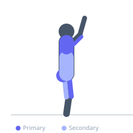
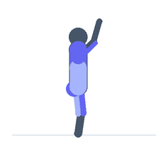

Exercise guide / Clean and Jerk
Clean and Jerk
The clean and jerk is the second of the two Olympic weightlifting competition lifts, consisting of two distinct phases: the clean, which brings the bar from the floor to the front rack position on the shoulders, and the jerk, which drives the bar from the shoulders to a fully locked overhead position. It is typically the stronger of the two Olympic lifts and demands whole-body explosive power, precise technique, and excellent mobility throughout the shoulders, hips, and ankles.
Primary muscles
gluteus maximus
rectus femoris
vastus lateralis
trapezius upper
deltoid anterior
triceps long head
Secondary muscles
erector spinae
biceps femoris long head
latissimus dorsi
deltoid lateral
Stabilizers
transverse abdominis
infraspinatus
supraspinatus
Equipment
Standard Barbell
Weight Plates
Optional
Power Rack (Squat Cage)


Starting position
- Bar over mid-foot, shoulder-width clean grip (narrower than snatch), flat back, shoulders slightly in front of the bar.
Setup
- Use bumper plates and a lifting platform. The jerk requires sufficient shoulder mobility to achieve a stable overhead catch. Warm up shoulders, hips, and ankles thoroughly.
Steps
- Step 1 (Clean): First pull — drive legs into the floor, keeping back angle constant and bar close.
- Step 2 (Clean): Second pull — extend hips explosively as the bar passes the hip. Shrug and pull elbows high.
- Step 3 (Clean): Pull under the bar and receive it in the front rack position (elbows high, bar on shoulders) in a front squat. Stand to full extension.
- Step 4 (Jerk): From the front rack, take a controlled dip — bend the knees 10–15 cm, keeping the torso upright.
- Step 5 (Jerk): Drive upward explosively with the legs, then drop under the bar into a split or push position with arms locked overhead. Stand to full extension.
Coaching cues
- High elbows in the rack — bar on the shoulders, not the hands
- Dip straight down — not forward
- Lock out the elbows fast in the catch
Breathing
- Brace before the clean. Reset and re-brace in the front rack before the jerk. Exhale after the overhead lock-out.
Range of motion
- Full hip extension on the second pull. Full overhead lockout with stable shoulder and spine in the jerk.
Tempo
- Maximum explosive intent throughout. The clean is typically under 2 seconds; there is a deliberate pause in the front rack before the jerk.
Common mistakes
- Early arm bend during the clean pull
- Insufficient hip extension before the second pull
- Dipping forward during the jerk dip, shifting the bar off the ideal catch position
- Soft elbows in the overhead catch
Safety
- Requires extensive technical coaching. Never compromise the catch to avoid dropping the bar.
- Use bumper plates and be prepared to bail safely.
- Wrist mobility is essential for the front rack — develop it before loading the clean.
Training
- strength: 1–3 reps
- power: 1–5 reps
- strength: 3–8 sets
- power: 4–8 sets
- Rest: {'strength': 240, 'power': 180}